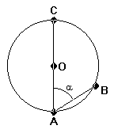
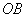
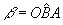
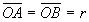
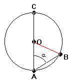
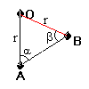

Questão 1 - Nível segundo grau
Em um círculo de centro O, figura abaixo, está inscrito o ângulo α . Se o ângulo AÔB mede 80o, então α mede:
|
 |
Resolução:
Tracemos o segmento

(figura 1) e seja
. No triângulo OAB (figura 2), destacado da circunferência, temos
(r é o raio da circunferência), logo OAB é um triângulo isósceles com base AB, portanto α = β. Nota 1|
 figura 1 |
 figura 2 |
Sabemos que: α + β + AÔB = 180o Nota 2
daí: α + α + 80o = 180o ⇒ α + α = 100o ⇒ 2α = 100o ⇒ α = 50o
 Voltar à Lista de Questões
Voltar à Lista de Questões
Notas
Nota 1: Em todo triângulo isósceles os ângulos que os lados formam com a base são iguais.
Nota 2: Em todo triângulo a soma dos ângulos internos é igual a 180o.